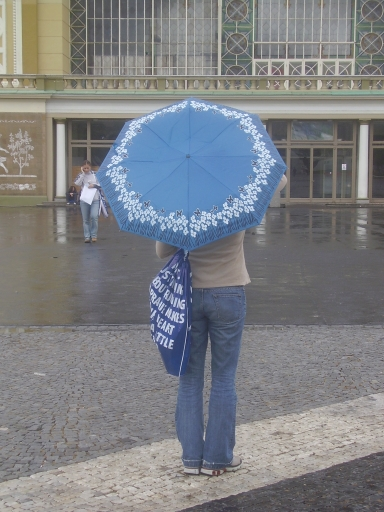
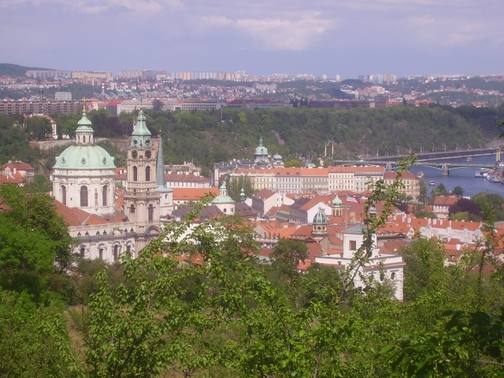
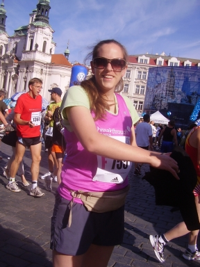
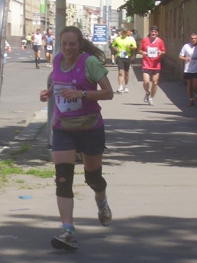
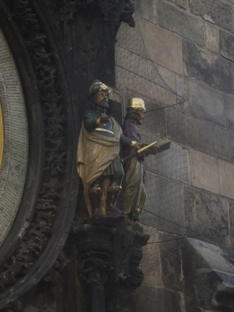

Irene was already there when I arrived, and we talked for an hour. It's a tiny airport but did at least have a coffee bar with a few seats. Hester arrived very soon after Irene left, and we went through security to the departure lounge, with time for a quick tour of the shops before we were called to the departure gate. Hester bought a magazine that came with a free umbrella (or was it the other way round?)
We flew on Swiss Airlines with a long stopover in Zurich. Hester dozed on the way; I exhausted the resources of the in-flight magazine. The refreshments on the plane were not up to much (a bread roll filled with cream cheese and porridge oats), so with some difficulty we found the restaurant in the vast airport in Zurich. It was real Swiss cheese - red and white check gingham lampshades, hearts cut in the backs on the wooden chairs - but no cuckoo clocks! By this time I had the feeling of being on holiday.
The plane from Zurich to Prague was a bit delayed, so we had quite a wait at the departure gate. Finally it came; from our vantage point we could see just the tail approaching, like a shark's fin. But once underway, the journey went quickly, and soon we were there.
Bob had left earlier and had sent the details of a cab he had found, cheaper than the airport taxis; bit we decided to take public transport (feasible since I had a stash of Czech crowns from previous trips). The bus pulled in just as we arrived at the stop, and took us quickly to Dejvicka, from where we had to make one change on the Metro. (The hotel Hester had found on the internet was near Pancrac station, on the red line). On the platform at Muzeum, waiting for the second train, who should appear but Bob, also on his way back to the hotel, after a successful session at blackjack. This saved us having to search for the hotel, which is a big new block-shaped building, but shielded from view from the station by another big new block-shaped building.
There was a problem with the reservation: they had never heard of me, though Hester had the papers from lastminute.com showing that the booking had been made. After some delay they found a room for me, two floors above Hester and Bob, with a view of the sun setting behind the cranes on the building site next door.
It was 8:45 by then, so we decided to eat in the hotel restaurant rather than searching further afield for a meal. Typical hotel food, adequate if a bit overpriced.
Bob didn't show up for breakfast, but was ready to leave the hotel with us. We went to the station and bought 24 hour tickets. First we headed for the expo centre for Hester to pick up her number and chip. We arrived at the station given in the information pack, to find nothing, and no information either. Another runner, equally lost, was no better informed. Fortunately it was clear from the map which direction we should go; it was still quite a hike. I should really have studied the map more carefully; I'd seen where the expo was but not the metro station.
|
When we got there, it was quite clear that we were in the right place. As
well as registration and pickup desks for the marathon and various fun runs,
there were booths with information about a dozen other marathons, and stalls
selling or giving away shoes, clothing, food and drink, and live music in one
corner of the vast hall.
Hester had forgotten her watch. One of the stalls sold something that claimed to be not just a watch, but a complete training system for many sports. It seemed to fill the bill (for a digital readout, stopwatch, and decent strap), but the man was unable to sell us one; he even attempted to take a screwdriver to the display case to get one out, Eventually we gave up on it and left. While we were inside, the weather had gone from sun to rain; Hester had the chance to try out her new umbrella. At my suggestion, we took a tram to Andel, to look for a watch in the vast Novy Smichov shopping centre. We got water in the huge supermarket, but a watch defeated us - neither sports shops nor jewellers nor fashion shops could meet her modest requirements. Finally, just as we were leaving, we saw one more watch shop, which actually had something to suit. |
 |
What next? I suggested a siesta to Hester; she felt that was a good idea. (I recognised the symptoms: lethargy as the body conserves energy for what it will soon be facing.) So she and Bob headed for the metro, while I went for a walk round some of my old haunts. We agreed to meet under the clock at 5:15.
|  | It stayed sunny despite clouds tossed on the wind. I walked north to the Palace of Justice, and up Petrin Hill, through deep green with views up the river, across, and finally down on the red Malastrana rooftops. A quick tour through the Strahov monastery courtyard, then down past the Loretto to the castle. I went out the side gate and round the royal gardens, with rhododendron and laburnum in flower.Then back into the castle, and along the rampart gardens, with their intimate views down to the Wallenstein gardens and the courtyards in Malastrana. I walked down the steps, checked out the Cerny Orel (menu apparently unchanged, still a mixture of Italian and traditional Czech, and still reasonable price despite being so close to the tourist route). Then I walked down to Kampa, around the island, and out the far end to avoid the Charles Bridge, and into the Old Town in good time for the rendezvous. |
We walked around the square; I showed them my office window from 2003. Then we decided it was not too late to eat, so went to the restaurant. Hester had had enough of pasta, so went for meat-filled dumplings with cabbage. We took dessert, and then left. Good enough, and again inexpensive.
After dinner we walked down past Winston Churchill (outside the British embassy) and the Hrocha (Hippo) pub (by now very busy and noisy). Leaving the square we met a party of Americans looking for the metro, so we took them along. Inevitably, they had plenty enough in common with Bob to make a conversation.
And so home to bed. Early start tomorrow.
I got there just as the bar was opening, so I ordered the coffee and orange. They arrived just after Hester and just before Bob, so before long we were all ready to go.
|  |
The day was already warm, with a few high cirrus clouds, but promising to be
much hotter (a promise that was certainly fulfilled). We took the metro to
Mustek.
Into the Old Town Square, full of people and amplified voices. Hester got herself ready, put on her number and chip, and found her place in the queue with 20 minutes to spare, so Bob and I left her and went to find a vantage point to watch the start. Hester said that having us around would make her nervous; I can understand that. When I ran marathons I was anxious for the people who took me to the start not to hang about. |
|
We found a cafe with tables under a shady tree just after the start, and not
too crowded. At 9 the runners were off, though we didn't see Hester for five
minutes. (The system was that runners' numbers were based on the expected
times they'd given, and the stewards were enforcing this. Hopefully Hester's
chip will give her real time.) In the crush of runners, she saw us before we
spotted her, and she gave us a happy wave.
Our spot was also the 12km mark, so we decided to wait and see here past before heading up the river. We had coffee and made signs to wave at her. She arrived in an hour and a quarter; allowing for the time lost at the start, that put her at just under 6 minutes per kilometre, but I forgot to make this allowance (which bedevilled our subsequent calculations). Then we set off in a hurry. But, as Bob said, the subway gods were not with us and we were too late to see her at 15km. But she passed this intersection three times, so we saw her at 19 (before we were expecting her, at 1hr 53mins, looking in great shape) and again at 24 and a half. Then we tore over the bridge and saw her twice on the other side. She was keeping the pace very well, with just a little slippage. |
 |
I thought that, if Hester had slowed a bit, we might just catch her. In this dismal spot on the last and most brutal stretch, she may have welcomed some encouragement. But we waited until she would have had to have slowed disastrously, and then assumed that instead she had been going well and beaten us again. I had had in mind giving her a cheer on the other side of the bridge, only 1.2km from the finish; but assuming the best, we decided to head for the finish.
And there, after not too long a wait, she came in, running strongly, going under the clock in about 4:16, which will give her 4:11 or 4:12 actual time.
I have to say, how well she judged it. Her pace barely altered the entire way; she came in looking in much better shape than many of the people around her.
So we hurried to the end of the funnel, and after she had done a bit of stretching, took her off for a well-earned beer. She went off for her preordered massage while Bob and I finished her beer, and then we headed for the metro.
We agreed to have a sandwich and save our appetites for tonight. Hester had spotted some sandwich bars near Muzeum (at the top end of Wenceslas Square) yesterday; since we had to change there anyway, we got out and very nice sandwiches from the half-and-half shop.
Back at the metro, I said I would go and book a restaurant while Hester went back with Bob to the hotel for a well-earned soak. We would again meet under the clock.
|  |
I walked down keeping
south of the tourist route (but as usual in those tangled streets, not by the
most direct route). The idea crossed my mind to try the Nebozizek; but there
was such a long queue for the funicular railway that I abandoned it, and
walked back to the Maltese square and booked a table at U Vladare for 8pm.
Then I went to the park on Kampa to write up my notes before going to check
that the tram would really get us quickly to I. P. Pavlova metro.
I went back to the hotel for a shower, and set off for another little walk round the Old Town before meeting Hester and Bob. By chance I met the runner we had met looking for the expo. He said the heat had affected him badly, and he'd only managed 2hrs 57mins (he'd been hoping for 2hrs 45mins). He sent his congratulations to Hester. By the time I met her under the clock, Hester was a bit stiff, but the sense of achievement had kicked in; she was so happy, she looked radiant under the touch of sunburn. |
We finished the evening off at the Hrocha. It was much less full than usual, and we got seats straight away, sharing with three young Russians with whom we managed quite a lively conversation in broken English, a word or two of Russian, and a lot of gesturing. Then the tram and metro back to the hotel.
We took the metro to Malastranska and walked up the back way to the castle. The day was hot, at least as hot as yesterday and even more humid. Hester was a bit slow up steps (and even slower down) but otherwise in good shape.
The castle was, inevitably, packed with tourists. We looked at things from the outside, and Hester bought a card in the museum shop. After a little excursion out the front gate to see the view over the rooftops of Mala Strana, we went out the side gate, past the royal gardens, and down the wide streets to Dejvicka. We arrived at the bus stop just as the airport bus was pulling in, so we jumped on. Unlike the metro, the airport bus is not air-conditioned; the only free seats were on the sunny side. So it was a warm ride until we were able to swap sides.
The bus got us to the airport so promptly that check-in for our flight wasn't even open. So we found a fast food place and had juice and coffee (a real comedown after the hotel bar!) After that, the check-in desk was open, so we sent through passport control to the departure lounge. Not much in the way of shops, so we sat and had expensive beers (one small beer costing more than three large beers in the Hrocha) and read until time to go to the gate.
The flight home was uneventful. I had the window seat; on most planes I would have seen nothing, but the Avro RJ85 that we had on both legs had high wings, so only the engine blocked my view. Surprisingly good visibility out of Prague until we entered the clouds; but they were much more serious in Geneva, with rain bucketing down. The in-flight snack on both legs was Movenpick ice cream, but we managed to get very good baguettes in a snack bar near the departure gate. It was raining even harder when we left, and the plane splashed through an enormous puddle on the way to the runway, throwing spray everywhere.
At London the weather was not so bad. When we got under the clouds, we were over Rochester, and came up the Thames with views of Canvey Island, Thamesmead, Dagenham and Barking Creek before landing ten minutes ahead of schedule. We were quickly through arrivals and were walking out of the terminal by 5. Then a fast and uncrowded journey on the Docklands Railway, goodbye to Hester at Limehouse, and a short walk home through light drizzle.